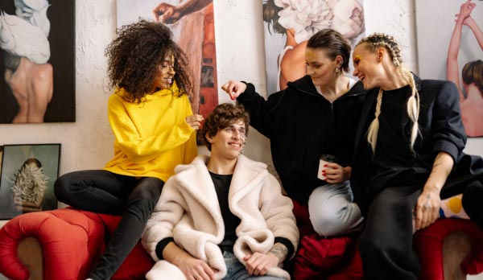

Case Study Title - Main section
CASE STUDY
ONTARIO SHORES CENTRE FOR MENTAL HEALTH SCIENCES
IDP3 Term 4 Website Modernisation and Campaign
The project was aimed at providing comprehensive information and support to individuals and families dealing with bipolar disorder through the creation of an inclusive, informative, and user-friendly digital platform that enhances the overall user experience while aligning with best practices in mental health support.

The core focus of the project as well as the campaign was directed towards creating a recovery-oriented environment of compassion, inspiration, and hope. Through this initiative, we aspired to make a profound difference in the lives of those living with complex and serious mental illness, aiming to revolutionise the user experience while increasing awareness about bipolar disorder.

PROJECT GOALS
- Understand User Needs
- Enhance Accessibility
- Streamline Information
- Foster Engagement
- Promote Awareness
PROJECT PHASES
Stage One: UX Study Phase
- Research Methods — We gathered insights through user surveys, interviews, competitor analysis, and an accessibility audit.
- Key Findings — Users seek easy access to comprehensive information, personal stories, and testimonials. Website navigation and accessibility need improvement, and there are limited community engagement opportunities.
Stage Two: UX/UI Design Phase
- Information Architecture: We designed a clear, user-friendly structure with sections like “Understanding Bipolar Disorder” and “Recovery Stories.”
Technologies & Programs Used:
CINEMA 4D
PREMIERE PRO
AFTER EFFECTS
HTML, CSS, JAVASCRIPT
Project Deliverables:
- 1. Brand guidelines
- 2. Website wireframes and prototype
- 3. Original design assets
- 4. Responsive web pages
- 5. Promotional 3D ad
THIRD SECTION
REDEFINING MENTAL HEALTH &
THE JOURNEY TO RECOVERY
This project encompassed a comprehensive website redesign and an impactful awareness campaign. It optimized information flow, featured appealing visuals, and ensured mobile responsiveness.
A compassionate and hopeful message underpinned the project’s triumph, fostering understanding, awareness, and support for individuals and families affected by bipolar disorder.
TEAM MEMBERS
- Emily Anderson — Project Manager
- Daniel Ramirez — UX/UI Designer
- Olivia Mitchell — Content Strategist
- Ethan Patel — Accessibility Specialist
- Sophia Carter — Awareness Campaign Coordinator